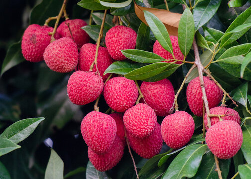
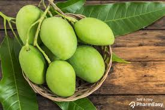

FROOT

LCHHI
The lychee bears fleshy fruits that mature in 80–112 days depending on climate, location, and cultivar. Fruits vary in shape from round to ovoid to heart-shaped, up to 5 cm long and 4 cm wide (2.0 in × 1.6 in), weighing approximately 20 g.[11][12]
The thin, tough skin is green when immature, ripening to red or pink-red, and is smooth or covered with small sharp protuberances roughly textured. The rind is inedible but easily removed to expose a layer of translucent white fleshy aril with a floral smell and a sweet flavor.[11] The skin turns brown and dry when left out after harvesting.
The fleshy, edible portion of the fruit is an aril, surrounding one dark brown inedible seed that is 1 to 3.3 cm long and 0.6 to 1.2 cm wide (0.39–1.30 by 0.24–0.47 in). Some cultivars produce a high percentage of fruits with shriveled aborted seeds known as 'chicken tongues'. These fruits typically have a higher price, due to having more edible flesh.[10] Since the floral flavor is lost in the process of canning, the fruit is usually eaten fresh.[11]
Litchi chinensis is the sole member of the genus Litchi in the soapberry family, Sapindaceae.[4]
It was described and named by French naturalist Pierre Sonnerat in his account "Voyage aux Indes Orientales et à la Chine, fait depuis 1774 jusqu'à 1781" (translation: "Voyage to the East Indies and China, made between 1774 and 1781"), which was published in 1782.[8] There are three subspecies, determined by flower arrangement, twig thickness, fruit, and a number of stamens.
Litchi chinensis subsp. chinensis is the only commercialized lychee. It grows wild in southern China, northern Vietnam, and Cambodia. It has thin twigs, flowers typically have six stamens, fruit are smooth or with protuberances up to 2 mm (0.079 in).
Litchi chinensis subsp. philippinensis (Radlk.) Leenh. It is common in the wild in the Philippines and rarely cultivated. It has thin twigs, six to seven stamens, long oval fruit with spiky protuberances up to 3 mm (0.12 in).[9]
Litchi chinensis subsp. javensis. It is only known in cultivation, in Malaysia and Indonesia. It has thick twigs, flowers with seven to eleven stamens in sessile clusters, smooth fruit with protuberances up to 1 mm (0.039 in).[4][10]

Mango
trees grow to 30–40 metres (98–131 feet) tall, with a crown radius of 10–15 m (33–49 ft). The trees are long-lived, as some specimens still fruit after 300 years.[11]
In deep soil, the taproot descends to a depth of 6 m (20 ft), with profuse, wide-spreading feeder roots and anchor roots penetrating deeply into the soil.[4] The leaves are evergreen, alternate, simple, 15–35 centimetres (6–14 inches) long, and 6–16 cm (2+1⁄2–6+1⁄2 in) broad; when the leaves are young they are orange-pink, rapidly changing to a dark, glossy red, then dark green as they mature.[4] The flowers are produced in terminal panicles 10–40 cm (4–15+1⁄2 in) long; each flower is small and white with five petals 5–10 millimetres (3⁄16–3⁄8 in) long, with a mild, sweet fragrance.[4] Over 500 varieties of mangoes are known,[4] many of which ripen in summer, while some give a double crop.[12] The fruit takes four to five months from flowering to ripening.[4]
The ripe fruit varies according to cultivar in size, shape, color, sweetness, and eating quality.[4] Depending on the cultivar, fruits are variously yellow, orange, red, or green.[4] The fruit has a single flat, oblong pit that can be fibrous or hairy on the surface and does not separate easily from the pulp.[4] The fruits may be somewhat round, oval, or kidney-shaped, ranging from 5–25 centimetres (2–10 in) in length and from 140 grams (5 oz) to 2 kilograms (5 lb) in weight per individual fruit.[4] The skin is leather-like, waxy, smooth, and fragrant, with colors ranging from green to yellow, yellow-orange, yellow-red, or blushed with various shades of red, purple, pink, or yellow when fully ripe.[4]
Ripe intact mangoes give off a distinctive resinous, sweet smell.[4] Inside the pit 1–2 mm (0.039–0.079 in) thick is a thin lining covering a single seed, 4–7 cm (1.6–2.8 in) long. Mangoes have recalcitrant seeds which do not survive freezing and drying.[13] Mango trees grow readily from seeds, with germination success highest when seeds are obtained from mature fruits.[4]
GAMES

FOOTBALL
is a family of team sports that involve, to varying degrees, kicking a ball to score a goal. Unqualified, the word football normally means the form of football that is the most popular where the word is used. Sports commonly called football include association football (known as soccer in Australia, Canada, South Africa, the United States, and sometimes in Ireland and New Zealand); Australian rules football; Gaelic football; gridiron football (specifically American football, Arena football, or Canadian football); International rules football; rugby league football; and rugby union football.[1] These various forms of football share, to varying degrees, common origins and are known as "football codes".
There are a number of references to traditional, ancient, or prehistoric ball games played in many different parts of the world.
[2][3][4] Contemporary codes of football can be traced back to the codification of these games at English public schools during the 19th century, itself an outgrowth of medieval football.[5][6] The expansion and cultural power of the British Empire allowed these rules of football to spread to areas of British influence outside the directly controlled Empire.[7] By the end of the 19th century, distinct regional codes were already developing: Gaelic football, for example, deliberately incorporated the rules of local traditional football games in order to maintain their heritage.[8] In 1888, the Football League was founded in England, becoming the first of many professional football associations. During the 20th century, several of the various kinds of football grew to become some of the most popular team sports in the world.
[9
Cricket is a bat-and-ball game that is played between two teams of eleven players on a field at the centre of which is a 22-yard (20-metre) pitch with a wicket at each end, each comprising two bails balanced on three stumps. Two players from the batting team (the striker and nonstriker) stand in front of either wicket, with one player from the fielding team (the bowler) bowling the ball towards the striker's wicket from the opposite end of the pitch. The striker's goal is to hit the bowled ball and then switch places with the nonstriker, with the batting team scoring one run for each exchange. Runs are also scored when the ball reaches or crosses the boundary of the field or when the ball is bowled illegally.
The fielding team tries to prevent runs from being scored by dismissing batters (so they are "out"). Means of dismissal include being bowled, when the ball hits the striker's wicket and dislodges the bails, and by the fielding side either catching the ball after it is hit by the bat, but before it hits the ground, or hitting a wicket with the ball before a batter can cross the crease in front of the wicket. When ten batters have been dismissed, the innings ends and the teams swap roles. Forms of cricket range from Twenty20 (also known as T20), with each team batting for a single innings of 20 overs (each "over" being a set of 6 fair opportunities for the batting team to score) and the game generally lasting three to four hours, to Test matches played over five days.
Traditionally cricketers play in all-white kit, but in limited overs cricket they wear club or team colours. In addition to the basic kit, some players wear protective gear to prevent injury caused by the ball, which is a hard, solid spheroid made of compressed leather with a slightly raised sewn seam enclosing a cork core layered with tightly wound string.
The earliest known definite reference to cricket is to it being played in South East England in the mid-16th century. It spread globally with the expansion of the British Empire, with the first international matches in the second half of the 19th century. The game's governing body is the International Cricket Council (ICC), which has over 100 members, twelve of which are full members who play Test matches. The game's rules, the Laws of Cricket, are maintained by Marylebone Cricket Club (MCC) in London. The sport is followed primarily in South Asia, Australia, New Zealand, the United Kingdom, Southern Africa and the West Indies.[1]
Women's cricket, which is organised and played separately, has also achieved international standard.
The most successful side playing international cricket is Australia, which has won eight One Day International trophies, including six World Cups, more than any other country and has been the top-rated Test side more than any other country.[citation needed]
History
THE END